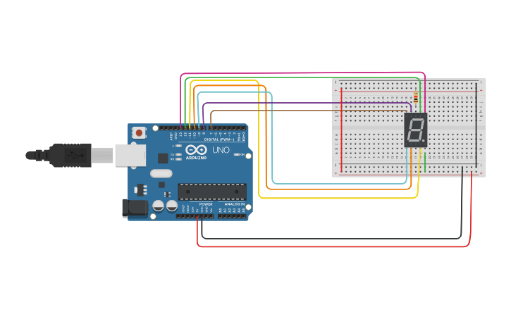

PROJECT 17: DIGITAL DICE
Random Number Generator
Mission Brief
Board games often rely on luck. In this project, you will replace physical dice with a digital version. The Arduino will generate a random number between 1 and 6 and display it on the 7-segment screen.
Key Components
- Arduino Uno R3
- 7-Segment Display (Common Cathode)
- Resistor (220Ω)
- Jumper Wires
Circuit Diagram

Pin Connections
| Arduino Pin | Component Connection |
|---|---|
| Pins 2 - 8 | Segments a, b, c, d, e, f, g |
| GND | Common Pin (via Resistor) |
Step-by-Step Instructions
- Insert the 7-Segment Display into the breadboard.
- Connect the Common Pin (usually center top or bottom) to the **Negative Rail** via a resistor.
- Connect the Arduino **GND** to the Negative Rail.
- Connect the segment pins (a, b, c, d, e, f, g) to Arduino pins **2 through 8** in order. Follow the diagram carefully!
- Upload the code below.
Arduino Code
/* Project 17 - Digital Dice
* Displays a random number (1-6) on the 7-segment display.
* Generates a new number every second.
*/
// Pin definitions: a, b, c, d, e, f, g
int segmentPins[] = {2, 3, 4, 5, 6, 7, 8};
// Patterns for numbers 0-9 (1=ON, 0=OFF)
byte digits[10][7] = {
{1,1,1,1,1,1,0}, // 0
{0,1,1,0,0,0,0}, // 1
{1,1,0,1,1,0,1}, // 2
{1,1,1,1,0,0,1}, // 3
{0,1,1,0,0,1,1}, // 4
{1,0,1,1,0,1,1}, // 5
{1,0,1,1,1,1,1}, // 6
{1,1,1,0,0,0,0}, // 7
{1,1,1,1,1,1,1}, // 8
{1,1,1,1,0,1,1} // 9
};
void setup() {
// Initialize pins
for(int i=0; i<7; i++) {
pinMode(segmentPins[i], OUTPUT);
}
// Seed the random generator using noise from unconnected pin A0
randomSeed(analogRead(0));
}
void loop() {
// Roll the dice (Get number from 1 to 6)
int diceRoll = random(1, 7);
// Display the number
displayDigit(diceRoll);
// Wait before rolling again
delay(1000);
// Optional: Add a "scramble" effect here for realism!
}
// Function to light up the segments
void displayDigit(int num) {
for(int i=0; i<7; i++) {
digitalWrite(segmentPins[i], digits[num][i]);
}
}
How It Works
- Randomness:
-
random(min, max):
This function picks a number. Note that the 'max' is exclusive, so `random(1, 7)` gives us numbers 1, 2, 3, 4, 5, or 6. -
randomSeed():
Computers aren't truly random. They follow a list. By reading "static noise" from an unconnected pin (A0) at startup, we jump to a random spot in that list so the sequence is different every time you turn it on. - Display Logic:
-
Lookup Table:
Just like the counter project, we use a 2D array (`digits[][]`) to know which segments to turn on for any given number.
Expected Output
Every second, the display will change to show a new number between 1 and 6. It simulates rolling a die continuously.
What You Learned
- How to generate random numbers with Arduino.
- Why `randomSeed()` is important for true randomness.
- Reusing display logic (arrays) for different applications.
Next Steps / Extension Ideas
Combine this with a button! Make the display cycle through numbers rapidly ("rolling") while you hold the button, and stop on a final random number when you release it.